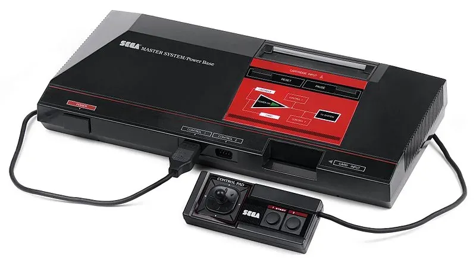

1985 年发布
Sega Master System
世嘉第二代主机 · 欧洲与巴西之王 · 8位机精品
1300万
全球销量
8位
CPU
卡带
介质
1985
发布年份
📖 历史与背景
1985年10月20日，世嘉在日本推出Master System——SG-1000的继任者。Master System搭载Z80 CPU（4MHz）和VDP视频处理器，在色彩（64色同时显示）和音效方面优于FC红白机。
在日本市场，Master System被FC碾压——FC游戏阵容太强。但在欧洲和巴西，Master System有着完全不同的命运：在欧洲（尤其是英国和西班牙），Master System凭借低价格和世嘉街机移植获得了千万级销量；在巴西，Tectoy公司取得授权后一直生产Master System直到2020年代——Master System在巴西拥有极高的市场占有率。
Master System的最显著特征是"双卡槽"设计——主机顶部的卡带插槽和正面的"卡片"插槽（Sega Card）。Sega Card是类似信用卡大小的薄卡，成本更低但容量有限。
⚙️ 硬件规格
CPU
Z80A 8位 4MHz
色彩
同屏64色（库256色）
内存
8KB RAM + 16KB VRAM
分辨率
256×192 / 256×224
音效
SN76489 + YM2413 FM(可选)
介质
卡带 + Sega Card
手柄
D-Pad + 2键
3D眼镜
液晶快门3D（可选配件）
🎮 经典游戏
索尼克
1991
Sonic首次登场即是MD版，但Master System也有专属索尼克
幻想空间
1986
Opa Opa冒险，世嘉吉祥物之一
怒之铁拳
1991
清版动作，Master System版相当出色
海豹突击队
1990
经典军事题材射击
Alex Kidd
1986
世嘉早期的吉祥物角色
Out Run
1987
街机移植，经典横向卷轴赛车